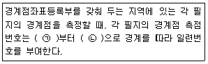

지적산업기사 (2015-03-08 기출문제)
1과목: 지적측량
1. 경위의측량방법으로 세부측량을 시행할 때의 설명으로 옳은 것은?
- 수평각은 1대회의 방향관측법이나 3배각의 배각법에 의한다.
- 도선법 또는 교회법에 의한다.
- 연직각은 정반으로 1회 관측하여 그 교차가 5분 이내일 때에는 그 평균치로 한다.
- 수평각 관측에서 1방향각 측각 공차는 30초 이내로 한다.
(정답률: 62%)

2. 다각망도선법에 의한 1도선이 폐색변을 포함하여 6변이고, 각 측점의 각을 측정하여 합한 결과 936°55‘10“ 이었다. 출발기지방위각(T1)이 26°31’18”였다면 관측방위각(T2)은?
- 63°26‘28“
- 150°23‘52“
- 203°26‘28“
- 330°23‘52“
(정답률: 57%)
3. 지적삼각보조점표지를 설치할 경우 점간거리 기준은?
- 평균 300미터 이하
- 평균 500미터 이하
- 평균 1킬로미터 이상 3킬로미터 이하
- 평균 2킬로미터 이상 5킬로미터 이하
(정답률: 77%)
4. 평판측량방법으로 세부측량을 시행하고자 할 때 측량준비 파일의 포함사항이 아닌 것은?
- 측량대상 토지의 경계선ㆍ지번 및 지목
- 경계점간 계산거리
- 행정구역선과 그 명칭
- 지적기준점 및 그 번호
(정답률: 56%)
5. 다각망도선법으로 지적삼각보조측량을 실시할 경우 폐색변을 포함한 변의 수가 4개일 때 도선법 평균방위각과 관측방위각의 폐색오차는?
- ±5초 이내
- ±10초 이내
- ±15초 이내
- ±20초 이내
(정답률: 76%)
6. 삼각측량에서 삼각망의 1번에 설치하는 기본적인 측선을 일컫는 용어로 옳은 것은?
- 귀심
- 방위
- 편심
- 기선
(정답률: 78%)
7. 다음 중 경위의측량방법과 교회법에 따른 지적삼각보조점의 관측 및 계산에서 2개의 삼각형으로부터 계산한 연결교차가 최대 얼마 이하일 때에 그 평균치를 지적삼각보조점의 위치로 하는가?
- 0.10m
- 0.20m
- 0.30m
- 0.40m
(정답률: 71%)
8. 축척이 1/500 지역에서 1등도선으로 지적도근점측량을 실시할 경우 연결오차에 대한 허용범위는? (단, 도선의 수평거리의 총합계는 800m이다.)
- 24cm 이하
- 14cm 이하
- 22cm 이하
- 12cm 이하
(정답률: 65%)
9. 다음 중 지상 500m2를 도면 상에 5cm2로 나타낼 수 있는 도면의 축척은 얼마인가?
- 1/500
- 1/600
- 1/1000
- 1/1200
(정답률: 86%)
10. 독립된 관측값의 정밀도를 나타내는데 사용되는 것은?
- 정준오차
- 허용공차
- 표준편차
- 연결오차
(정답률: 63%)
11. 다음 중 시오삼각형이 발생할 수 있는 세부측량방법은?
- 방사법
- 현형법
- 교회법
- 도선법
(정답률: 57%)
12. 지번과 지목의 제도방법에 대한 설명으로 옳지 않은 것은?
- 지번과 지목의 글자간격은 글자크기의 1/3 정도 띄워서 제도한다.
- 지번의 글자간격은 글자크기의 1/4 정도가 되도록 제도한다.
- 지번과 지목은 2mm 이상 3mm 이하의 크기로 제도한다.
- 지번과 지목이 경계에 닿지 않도록 필지의 중앙에 제도한다.
(정답률: 83%)
13. 다음의 평판측량 오차 중 평판이 수평이 되지 않고 경사질 때 발생하는 오차는?
- 정준오차
- 시준오차
- 구심오차
- 표정오차
(정답률: 45%)
14. 다음 중 경위의측량방법과 교회법에 따른 지적삼각보조점의 관측 및 계산 기준에 관한 설명으로 옳은 것은?
- 관측은 20초독 이상의 경위의를 사용한다.
- 점간거리의 측정은 3회 실시한다.
- 수평각 관측은 3대회의 방향관측법에 따른다.
- 수평각의 1방향각 측각공차는 50초 이내이다.
(정답률: 71%)
15. 트랜싯(Transit)으로 수평각을 정반 관측하는 가장 큰 목적은?
- 관측 오차를 발견하기 위하여
- 외심 오차를 제거하기 위하여
- 불완전한 기계오차를 줄이기 위하여
- 시준오차를 제거하기 위하여
(정답률: 57%)
16. 1/600 지적도 시행지역에서 평판측량의 도선법으로 세부측량을 실시하는 경우에는 측선의 길이를 얼마 이하로 정하여야 하는가?
- 72cm 이하
- 60cm 이하
- 54cm 이하
- 48cm 이하
(정답률: 44%)
17. 지적삼각보조점측량을 할 때에 지적삼각보조점은 어떠한 망으로 구성하여야 하는가?
- 삽입망
- 삼각망
- 사각망
- 교회망
(정답률: 67%)
18. 다음 중 평판측량방법에 따른 세부측량을 교회법으로 하는 경우의 기준으로 옳지 않은 것은?
- 3방향 이상의 교회에 따른다.
- 방향각의 교각은 30도 이상 150도 이하로 한다.
- 전방교회법 또는 후방교회법에 의한다.
- 광파조준의를 사용하는 경우 방향선의 도상길이는 30cm 이하로 할 수 있다.
(정답률: 66%)
19. 지적측량성과 검사방법을 설명한 것으로 틀린 것은?
- 지적삼각점측량은 신설된 점을 검사한다.
- 측량성과를 검사하는 때에는 측량자가 실시한 측량방법과 같은 방법으로 한다.
- 지적도근점측량은 주요도선별로 지적도근점을 검사한다.
- 면적측정검사는 필지별로 한다.
(정답률: 80%)
20. 좌표면적계산법에 의한 산출면적은 1/1000m2까지 계산해 () 단위로 정한다. ()안에 들어갈 면적단위는?
- 1/1000m2
- 1/100m2
- 1/10m2
- 1m2
(정답률: 77%)
2과목: 응용측량
21. 표고 100m인 A점에서 표고 120m인 B점을 관측하여 경사각 25°를 구했다면 A, B점간의 수평거리는? (단, A점의 기계고와 B점의 시준고는 같다.)
- 42.26m
- 42.89m
- 47.32m
- 50.71m
(정답률: 61%)
22. 절대표정에 대한 설명으로 옳은 것은?
- 한쪽만을 움직여 접합시키는 작업이다.
- 사진지표와 초점거리를 바로 잡는 작업이다.
- 축척과 위치를 바로 잡는 작업이다.
- 종시차를 소거시키는 작업이다.
(정답률: 49%)
23. 터널측량의 구분 중 터널 외 측량의 작업공정으로 틀린 것은?
- 두 터널 입구 부근의 수준점 설치
- 두 터널 입구 부근의 지형측량
- 중심선에 따른 터널의 방향 및 거리측량
- 줄자에 의한 수직 터널의 심도측정
(정답률: 70%)
24. 지형의 표시법 중 급경사는 굵고 짧게, 완경사는 가늘고 길게 표시하는 방법은?
- 음영법
- 영선법
- 채샛법
- 등고선법
(정답률: 72%)
25. 사진측량에서 입체모델(Stereo Model)에 대한 설명으로 옳은 것은?
- 한 장의 수직사진을 말한다.
- 입체시가 되는 중복사진의 상을 말한다.
- 편위 수정한 사진의 상을 말한다.
- 축척이 동일한 흑백과 천연색 사진을 말한다.
(정답률: 77%)
26. 축척 A의 횡단면적이 32m2, 측점 B의 횡단면적이 48m2이고, 두 측점간 거리가 20m일 때 토공량은?
- 640m3
- 780m3
- 800m3
- 960m3
(정답률: 50%)
27. 항공사진측량에서 촬영시 적용되는 투영법은?
- 중심투영
- 정사투영
- 평행투영
- 연직투영
(정답률: 48%)
28. 좌표(X, Y, Z)가 각각 A(810. 328. 86.3), B(589, 734, 112.4)인 두 점 A, B를 연결하는 터널의 경사각은? (단, 좌표의 단위는 m이다.)
- 2° 13‘ 54“
- 3° 13‘ 54“
- 23° 13‘ 54“
- 86° 45‘ 48“
(정답률: 54%)
29. GPS측량을 위해 위성에서 발사하는 신호 요소가 아닌 것은?
- 반송파(carrier)
- P-코드
- C/A코드
- 키네메틱(kinematic)
(정답률: 67%)
30. 촬영고도 3000m에서 촬영한 1:20000 축척의 항공사진에서 연직점으로부터 10cm 떨어진 곳에 찍힌 굴뚝의 길이를 측정하니 2mm이었다. 이 굴뚝의 실제 높이는?
- 40m
- 50m
- 60m
- 70m
(정답률: 56%)
31. GPS측량에서 GDOP에 관한 설명으로 옳은 것은?
- 위성의 수치적인 평면의 함수 값이다.
- 수신기의 기하학적인 높이의 함수 값이다.
- 위성의 신호 강도와 관련된 오차로서 그 값이 크면 정밀도가 낮다.
- 위성의 기하학적인 배열과 관련된 함수 값이다.
(정답률: 65%)
32. 초점거리 150mm, 비행고도 3000m, 사진크기 23cm×23cm일 때 종중복도가 60%라면 이때의 기선장은?
- 1220m
- 1840m
- 2300m
- 3220m
(정답률: 68%)
33. 축척 1:25000 지형도에서 4% 기울기의 노선 선정시 계곡선 사이에 취하여야 할 도상 수평거리는?
- 5mm
- 10mm
- 50mm
- 100mm
(정답률: 48%)
34. 측량의 구분에서 노선측량이 아닌 것은?
- 철도의 노선 설계를 위한 측량
- 지형, 지물 등을 조사하는 측량
- 상하수도의 도수관 부설을 위한 측량
- 도로의 계획조사를 위한 측량
(정답률: 75%)
35. 클로소이드의 조합 형식 중 반향곡선 사이에 클로소이드를 삽입한 형식은?
- 기본형
- 난형
- 복합형
- S형
(정답률: 60%)
36. 지형도의 이용에 관한 설명으로 틀린 것은?
- 경계 복원
- 토량 계산
- 저수 유역면적 추정
- 성토, 절토의 범위 결정
(정답률: 62%)
37. 곡선장 및 횡거 등에 의해 캔트를 직선적으로 체감하는 완화곡선이 아닌 것은?
- 3차 포물선
- 클로소이드 곡선
- 렘니스케이트 곡선
- 반파장 정현 곡선
(정답률: 78%)
38. 폭이 100m이고 양안(兩岸)의 고저차가 1m인 하천을 횡단하여 수준측량을 실시할 때 양안의 고저차를 측정하는 방법으로 옳은 것은?
- 교호수준측량으로 구한다.
- 시거측량으로 구한다.
- 간접수준측량으로 구한다.
- 양안의 수면으로부터의 높이로 구한다.
(정답률: 77%)
39. 항공사진 촬영시 사진면에 직교하는 광선과 연직선이 이루는 각의 2등분선이 사진면과 만나는 점은?
- 주점
- 연직점
- 등각점
- 중심점
(정답률: 67%)
40. 노선측량에서 기점으로부터 B.C(곡선지점)까지의 거리가 1523.5m이고, C.L(곡선길이)이 260m이면, E.C(곡선종점)까지의 거리는?
- 1263.5m
- 1393.5m
- 1653.5m
- 1783.5m
(정답률: 61%)
3과목: 토지정보체계론
41. 데이터베이스에서 자료의 중앙 통제시 가장 큰 장점은?
- 데이터의 중복이 전혀 없게 되어 경제적이다.
- 저장된 자료의 일관성 유지가 용이하다.
- 보안에 대한 위험이 없어진다.
- 데이터베이스 관리자가 필요 없게 된다.
(정답률: 73%)
42. 지리정보 분야의 국제표준화기구로 1994년 6월에 구성되었으며, 수치로 된 지리정보분야에 대한 표준화를 다루는 기술위원회로 구성된 기구는?
- CEN/TC 287
- ISO/TC 211
- OGC
- OGF
(정답률: 77%)
43. 지적정보관리시스템의 사용자권한등록파일에 등록하는 사용자권한으로 옳지 않은 것은?
- 지적통계의 관리
- 종합부동산세 입력 및 수정
- 개인별 토지소유현황의 조희
- 토지관련 정책정보의 관리
(정답률: 64%)
44. 실세계에서 나타나는 다양한 대상물이나 현상을 X, Y와 같은 실제 좌표에 의한 점, 선, 다각형을 이용하여 표현하는 자료구조는?
- 래스터(rester)
- 인터폴레이션(interoplation)
- 픽셀(pixel)
- 벡터(vector)
(정답률: 78%)
45. 데이터베이스관리시스템이 파일시스템에 비하여 갖는 단점은?
- 자료의 일관성이 확보되지 않는다.
- 자료의 중복성을 피할 수 없다.
- 사용자별 자료접근에 대한 권한 부여를 할 수 없다.
- 일반적으로 시스템 도입비용이 비싸다.
(정답률: 80%)
46. 데이터베이스의 데이터 언어 중 데이터 조작어가 아닌 것은?
- SELECT문
- UPDATE문
- CREATE문
- DELETE문
(정답률: 66%)
47. 자료입력단계에서 입력자료의 질에 따른 오차가 아닌 것은?
- 좌표변환시 투영법에 따른 오차
- 논리적 일관성에 따른 오차
- 위치정확도에 따른 오차
- 속성정확도에 따른 오차
(정답률: 51%)
48. 다음 중 메타데이터(metadata)에 대한 설명으로 옳은 것은?
- 데이터의 내용, 논리적 관계, 기초자료의 정확도, 경계 등 자료의 특성을 설명하는 정보의 이력서이다.
- 수학적으로 데이터의 모형을 정의하는데 필요한 구성요소다.
- 여러 개의 변수 사이에 함수 관계를 설정하기 위하여 사용되는 매개 데이터를 말한다.
- 토지정보시스템에 사용되는 GPS, 사진측량 등에서 얻어진 위치자료를 데이터베이스화 한 자료를 말한다.
(정답률: 74%)
49. 위상구조에 사용되는 것이 아닌 것은?
- 밴드
- 노드
- 체인
- 링크
(정답률: 69%)
50. 격자구조를 벡터구조로 변환할 때 격자영상에 생긴 잡음(noise)을 제거하고 외곽선을 연속적으로 이어주는 영상처리 과정을 무엇이라고 하는가?
- Filtering
- Noising
- Conversioning
- Thinning
(정답률: 81%)
51. 지적측량성과작성시스템에서 사용하는 파일의 설명이 옳은 것은?
- 정보이용승인신청서 파일:*.ksp
- 측량결과 파일:*.iuf
- 측량계산 파일:*.dat
- 측량성과 파일:*.jsg
(정답률: 46%)
52. 토지정보시스템의 자료를 입력할 때 필지의 공간데이터로 취급하는 것은?
- 필지의 소유자
- 필지의 지번정보
- 필지의 소재지
- 필지의 경계점 좌표
(정답률: 67%)
53. GIS의 표준화 가운데 가장 큰 비중을 차지하고 있는 데이터 표준화의 유형과 가장 거리가 먼 것은?
- 데이터 모형 표준
- 데이터 내용 표준
- 데이터 수집 표준
- 데이터 정리 표준
(정답률: 38%)
54. DXF 파일의 구조는?(오류 신고가 접수된 문제입니다. 반드시 정답과 해설을 확인하시기 바랍니다.)
- ASCII
- KSC-5601
- ANSI
- SPARC
(정답률: 78%)
55. 지형공간정보체계가 아닌 것은?
- 도시정보시스템
- 토지정보시스템
- 토지대장전산시스템
- 지리정보시스템
(정답률: 62%)
56. 지적도면을 디지타이징한 결과 교차점을 만나지 목하고 선이 끝나는 오차 유형은?
- 오버슈팅
- 언더슈팅
- 스파이크
- 왜곡오차
(정답률: 76%)
57. 현재 우리나라 수치지도의 기준이 되는 타원체는 무엇인가?
- Bessel 타원체
- WGS84타원체
- GRS80타원체
- Heyford타원체
(정답률: 43%)
58. 토지정보체계의 도형정보 자료 취득방법 중 거리가 먼 것은?
- 지상측량에 의한 경우
- 원격탐측에 의한 경우
- 관계기관의 통보에 의한 경우
- GPS측량에 의한 경우
(정답률: 68%)
59. 소프트웨어의 주요기능 유형 중 데이터 입력과 관련이 없는 것은?
- 데이터 검색
- 공간 데이터 입력
- 데이터 통합
- 구조화 편집
(정답률: 37%)
60. 지적행정시스템의 개발목표와 거리가 먼 것은?
- 지적전산처리 절차의 개선
- 업무편리성 및 행정효율성 제고
- 궁극적으로 유관기관과의 시스템분리
- 부동산 종합정보 관리체계의 기반구축
(정답률: 65%)
4과목: 지적학
61. 지적행적시스템의 개발목표와 거리가 먼 것은?
- 토지등기의 기초
- 토지에 대한 과세의 기준
- 토지거래의 기준
- 토지소유제한의 기준
(정답률: 60%)
62. 우리나라의 지목 결정 원칙과 거리가 먼 것은?
- 용도경중의 원칙
- 1필1지목의 원칙
- 주지목 추종의 원칙
- 지형지목의 원칙
(정답률: 69%)
63. 매매계약이 성립되기 위해 매수인, 매도인 쌍방의 합의 외에 대가의 수수목적물의 인도시에 서면으로 작성한 계약서를 무엇이라 하는가?
- 문기
- 양안
- 입안
- 가계
(정답률: 66%)
64. 지압조사(地押調査)를 가장 잘 설명하고 있는 것은?
- 측량 성과 검사의 일종이다.
- 소유권의 변동사항에 주안을 둔다.
- 신청이 없는 경우의 직권에 의한 이동지 조사다.
- 소유자의 동의하에 현지를 확인하야 효력이 있다.
(정답률: 68%)
65. 대부분의 일반 농촌지역에서 주로 사용되며, 토지의 배열이 불규칙한 경우 인접해 있는 필지로 진행방향에 따라 연속적으로 지번을 부여하는 방식은?
- 사행식(蛇行式)
- 기우식(奇遇式)
- 교호식(交互式)
- 단지식(團地式)
(정답률: 75%)
66. 현대 지적의 원리로 가장 거리가 먼 것은?
- 공기능성
- 문화성
- 정확성
- 능률성
(정답률: 81%)
67. 1필지로 정할 수 있는 기준에 해당하지 않는 것은?
- 지번부여지역 안의 토지로 소유자가 동일한 토지
- 지번부여지역 안의 토지로 용도가 동일한 토지
- 지번부여지역 안의 토지로 지가가 동일한 토지
- 지번부여지역 안의 토지로 지반이 연속된 토지
(정답률: 80%)
68. 토지조사사업 당시 분쟁지 조사를 하였던 분쟁의 원인으로 가장 거리가 먼 것은?
- 토지 소속의 불명확
- 권리증명의 불분명
- 역둔토 정리의 미비
- 지적측량의 미숙
(정답률: 65%)
69. 다음 중 정약용과 서유구가 주장한 양전개정론의 내용이 아닌 것은?
- 경무법 시행
- 결부제 폐지
- 어린도법 시행
- 수등이척제 개선
(정답률: 67%)
70. 지적 국정주의에 대한 설명으로 옳은 것은?
- 지적공부에 등록하는 토지의 표시사항은 국가만이 결정할 수 있다.
- 모든 토지는 법령이 정하는 바에 따라 1필지마다 지번, 지목, 경계, 좌표 및 면적을 결정하여 지적공부에 등록하여야 한다.
- 지적에 관한 토지소유자, 이해관계인 및 일반국민으로 하여금 정당하게 이용할 수 있도록 하여야 한다.
- 부동산 물권 변동에 대하여 등기를 하지 않으면 효력이 없다.
(정답률: 68%)
71. 다음 중 세지적제도에서 중요시한 사항으로 가장 거리가 먼 것은?
- 생산량
- 면적
- 경계
- 토지 등급
(정답률: 51%)
72. 토지등록부의 편성방법 중 연대적 편성주의에 대한 설명으로 옳은 것은?
- 토지의 등록에 있어 개개인 토지를 중심으로 토지등록부를 편성하는 것으로 우리나라도 이 제도를 따르고 있다.
- 토지소유자별로 토지를 등록하여 동일 소유자에 속하는 모든 토지는 당해 소유권자의 대장에 기록하는 방식이다.
- 어떠한 특별한 기준을 두지 않고 당사자의 신청 순서에 따라 순차적으로 기록해 가는 것으로 레코딩시스템이 이에 속한다.
- 토지대장에 있어서 소유자별 토지등록카드와 지번별 목록, 성명별 목록을 동시에 등록하는 방식이다.
(정답률: 63%)
73. 부동산의 증명제도에 대한 설명으로 틀린 것은?
- 근대적 등기제도에 해당한다.
- 일본인이 우리나라에서 제한거리를 넘어서도 토지를 소유할 수 있는 근거가 되었다.
- 증명은 구한국에서 일제초기에 이르는 부동산등기의 일종이다.
- 소유권에 한하여 그 계약 내용을 인증해 주는 제도였다.
(정답률: 46%)
74. 조선시대의 토지대장인 양안에 대한 설명으로 옳지 않은 것은?
- 전적이라고도 하였다.
- 양안의 명칭은 시대, 사용처, 보관기간에 따라 달랐다.
- 양안은 호조, 본도, 본읍에서 보관하게 되어 있었다.
- 경국대전에 토지매매 후 100일 이내에 작성한다고 규정되어 있다.
(정답률: 60%)
75. 양안에 토지를 표시함에 있어 양전의 순서에 따라 1필지마다 천자문(千字文)의 자(字)번호를 부여하였던 제도는?
- 소등이척제
- 결부법
- 일자오결제
- 집결제
(정답률: 80%)
76. 다음 중 토지조사사업에서 사정(舍亭)하였던 사항은?
- 토지소유자
- 지번
- 지목
- 면적
(정답률: 47%)
77. 지적에서 토지의 경계라고 할 때 무엇을 의미하는가?
- 지상(地上)의 경계를 의미한다.
- 도면상(圖面上)의 경계를 의미한다.
- 소유자가 다른 토지 사이의 경계를 의미한다.
- 지목이 같은 토지 사이의 경계를 의미한다.
(정답률: 65%)
78. 지적의 발생설에 해당하지 않는 것은?
- 치수설
- 상징설
- 지배설
- 과세설
(정답률: 71%)
79. 임야조사사업 당시의 재결 기관은?
- 고등토지조사위원회
- 임시토지조사국장
- 임야조사위원회
- 도지사
(정답률: 70%)
80. 행정구역제도로 국도를 중심으로 영토를 사방으로 구획하는 사출도란 토지구획방법을 시행하였던 나라는?
- 고구려
- 부여
- 백제
- 조선
(정답률: 75%)
5과목: 지적관계
81. 다음 중 중앙지적위원회의 위원을 임명하거나 위촉하는 자는?
- 대한지적공사장
- 행정자치부장관
- 국토지리정보원장
- 국토교통부장관
(정답률: 79%)
82. 다음 중 지번부여지역의 정의로 옳은 것은?
- 지번을 부여하는 단위지역으로서 동ㆍ리 또는 이에 준하는 지역
- 지번을 부여하는 단위지역으로서 읍ㆍ면 또는 이에 준하는 지역
- 지번을 부여하는 단위지역으로서 시ㆍ군 또는 이에 준하는 지역
- 지번을 부여하는 단위지역으로서 시ㆍ도 또는 이에 준하는 지역
(정답률: 78%)
83. 다음 중 수수료를 납부해야 하는 경우로 옳지 않은 것은?
- 지적공부의 등본 발급을 신청할 때
- 지적전산자료의 이용을 신청할 때
- 지적측량을 의뢰할 때
- 측량을 위한 타인 토지 출입 허가증 발급을 신청할 때
(정답률: 66%)
84. 다음 중 도면번호가 등록되지 않는 장부는?
- 일람도
- 지번색인표
- 공유지연명부
- 경계점좌표등록부
(정답률: 40%)
85. 토지 및 임야대장의 등록사항으로 틀린 것은?
- 토지의 소재
- 소유자의 주소
- 도곽선과 그 수치
- 지번과 지목
(정답률: 39%)
86. 다음 중 현행 측량ㆍ수로조사 및 지적에 관한 법령에서 구분하고 있는 28개의 지목에 해당되는 것은?
- 나대지
- 납골용지
- 양어장
- 선하지
(정답률: 73%)
87. 과수원으로 이용되고 있는 1000m2 면적의 토지에 지목이 대(垈)인 30m2 면적의 토지가 포함되어 있을 경우 필지의 결정 방법으로 옳은 것은? (단, 토지의 소유자는 동일하다.)
- 종된 용도의 토지 면적이 주된 용도의 토지면적이 10% 미만이므로 전체를 1필지로 한다.
- 종된 용도의 토지의 지목이 대(垈)이므로 1필지로 할 수 없다.
- 지목이 대(垈)인 토지의 지가가 더 높으므로 전체를 1필지로 한다.
- 1필지로 하거나 필지를 달리하여도 무방하다.
(정답률: 75%)
88. 다음 중 토지의 합병신청을 할 수 있는 것은?
- 소유자의 주소가 서로 다른 경우
- 소유자별 공유지분이 서로 다른 토지
- 각 필지의 지적도의 축척이 서로 다른 경우
- 주택법에 의한 공동주택의 부지
(정답률: 76%)
89. 시ㆍ군ㆍ구(자치구가 아닌 구를 포함한다.) 단위의 지적전산 자료를 활용하려는 자는 누구의 승인을 받아야 하는가?
- 국가정보원장
- 행정자치부장관
- 지ㆍ도지사
- 지적소관청
(정답률: 78%)
90. ㉠과 ㉡에 들어갈 내용이 모두 옳은 것은?

- ㉠ 왼쪽 위에서 ㉡ 오른쪽
- ㉠ 왼쪽 아래에서 ㉡ 오른쪽
- ㉠ 오른쪽 위에서 ㉡ 왼쪽
- ㉠ 오른쪽 아래에서 ㉡ 왼쪽
(정답률: 78%)
91. 지적공부의 등록을 말소시켜야 하는 경우는?
- 홍수로 인하여 하천이 범람하여 토지가 매몰된 경우
- 토지가 지형의 변화 등으로 바다로 된 경우로서 원상회복이 불가능한 경우
- 토지에 형질변경의 사유가 생길 경우
- 대규모 화재로 건물이 전소한 경우
(정답률: 86%)
92. 지적소관청이 관할등기소에 토지의 표시 변경에 관한 등기를 할 필요가 있는 사유가 아닌 것은?
- 지적공부를 관리하기 위하여 필요하다고 인정되어 지적소관청이 직권으로 일정한 지역을 정하여 그 지역의 축척을 변경한 경우
- 지적소관청이 지적공부의 등록사항에 잘못이 있음을 발견하여 이를 직권으로 조사ㆍ측량하여 정정한 경우
- 지번부여지역의 일부가 행정구역의 개편으로 다른 지번부여지역에 속하게 되어 지적소관청이 새로 속하게 된 지번부여지역의 지번을 부여한 경우
- 토지소유자의 신청을 받아 지적소관청이 신규등록 한 경우
(정답률: 57%)
93. 1필지의 일부가 형질변경 등으로 용도가 변경 되어 토지소유자가 소관청에 분할을 신청하는 경우 함께 제출할 신청서로서 옳은 것은?
- 신규등록 신청서
- 지목변경 신청서
- 토지합병 신청서
- 용도전용 신청서
(정답률: 70%)
94. 다음 중 새로 조성된 토지와 지적공부에 등록되어 있지 아니한 토지를 지적공부에 등록하는 것을 무엇이라고 하는가?
- 등록전환
- 신규등록
- 지목변경
- 축척변경
(정답률: 86%)
95. 축척변경에 관하여 도지사의 승인을 얻은 후 지체 없이 공고해야 할 사항이 아닌 것은?
- 축척변경의 시행에 관한 세부계획
- 축척변경의 시행에 따른 청산방법
- 축척변경의 시행에 따른 토지소유자의 협조에 관한 사항
- 축척변경의 시행에 따른 이의신청 방법에 관한 사항
(정답률: 36%)
96. 다음 중 지적도의 축척에 해당하지 않는 것은?
- 1/500
- 1/1200
- 1/2500
- 1/3000
(정답률: 68%)
97. 다음 중 축척변경에 따른 청산금 산정에 대한 설명이 옳지 않은 것은?
- 지적소관청은 축척변경에 관한 측량을 한 결과 측량 전에 비하여 면적의 증감이 있는 경우에는 그 증감면적에 대하여 청산을 하여야 한다.
- 토지소유자 전원이 청산하지 아니하기로 합의하여 서면을 제출한 경우에도 지적소관청은 축척변경에 따른 증감면적에 대하여 청산을 하여야 한다.
- 지적소관청이 축척변경에 따른 증감면적에 대하여 청산하는 경우 축척변경위원회의 의결을 거쳐 지번별 제곱미터당 금액을 정하여야 한다.
- 지적소관청은 청산금을 산정하였을 때에는 청산금조서를 작성하고, 청산금이 결정되었다는 뜻으로 15일 이상 공고하여 일반인이 열람할 수 있게 하여야 한다.
(정답률: 66%)
98. 지목의 결정에 대한 설명으로 옳지 않은 것은?
- 지목의 결정 자체는 행정 처분이다.
- 지목의 결정은 지적소관청에서 한다.
- 지목은 토지의 주된 용도에 따라 결정한다.
- 지목은 토지 소유자의 신청이 있어야만 결정한다.
(정답률: 79%)
99. 도시개발사업 등의 신고에 관한 설명 중 옳지 않은 것은?
- 시행자는 사업의 착수ㆍ변경 및 완료사실을 지적소관청에 신고하여야 한다.
- 사업의 착수신고는 그 신고사유가 발생한 날로부터 15일 이내에 하여야 한다.
- 사업의 완료신고는 그 신고사유가 발생한 날로부터 30일 이내에 하여야 한다.
- 사업의 착수신고서에는 반드시 사업계획도가 첨부 되어야 한다.
(정답률: 53%)
100. 다음 중 지목과 지적도면에 등록하는 부호의 연결이 옳지 않은 것은?
- 주차장-주
- 공장용지-장
- 수도용지-수
- 창고용지-창
(정답률: 79%)